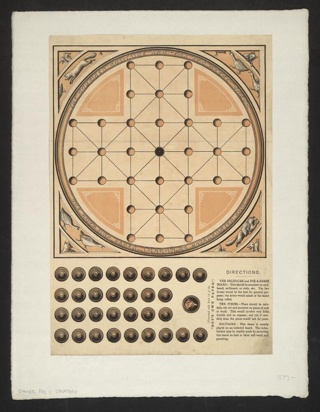

Fox and Geese is a hunt game, one of the oldest kinds of board game in Europe, in which one strong piece, the fox, tries to capture a flock of weaker pieces, the geese, which try to trap it. It has been played on the 33-point cross-shaped board in many countries, under names such as Fuchs und Gaense in Germany and Ræv og Gæs in Denmark, and is also related to older hunt games from Scandinavia. Records show it was familiar in England by the 1500s and it remained a children's and farm-kitchen favourite for centuries.
How it is played
One player controls the fox and the other controls a flock of thirteen to seventeen geese. The geese start at one end of the board and may step one point forward or sideways, but never backward. The fox may move one step in any allowed direction and captures by jumping over a goose into the empty point behind it. The geese win by pinning the fox so that it cannot move, and the fox wins by capturing enough geese that they can no longer block it.
Heritage note
Fox and Geese is typically scratched or carved into wood, painted on cloth or drawn on slate, and appears across northern Europe on household boards, in taverns and on school benches. Its balance changes with each rule variation: with the geese allowed diagonal moves or compulsory capture for the fox, the game tips one way or the other, and families developed their own house rules. The same idea of a lone predator against many weaker pieces turns up in Asia and Africa, as in the tiger and goat games, which makes it a good starting point for comparing hunt games around the world.
Origins
Documented in England and Scandinavia from the late Middle Ages, with possible links to the older Norse hunt game known as Halatafl; the 33-point cross board is the classic form of the English and German tradition.
Available in Arcforge
Try a 90-second preview in your browser Google Play App Store
Sources
Related entries
Lambs and Tigers
India · Board and table games

Racing Pigeon Loft
Belgium +2 · Board and table games
Highland Bagpipe Chanter and Drone
United Kingdom · Musical instrumentsPlay preview · in the Wind & Voice of the World app
More from United Kingdom

Antigua Classic Yacht Race
Antigua and Barbuda +1 · Racing
Bagatelle
France +1 · Dexterity and skill games
Bat and Trap
United Kingdom · Dexterity and skill gamesPlay preview · in the Ball Games of the World app
Blacksmith's Forge
United Kingdom +4 · Crafts and makingPlay preview · in the Woodcraft & Metal of the World app
Bridge Stick Race
United Kingdom · Toys
Broderie anglaise
United Kingdom · Crafts and makingPlay preview · in the Stitch & Thread of the World app